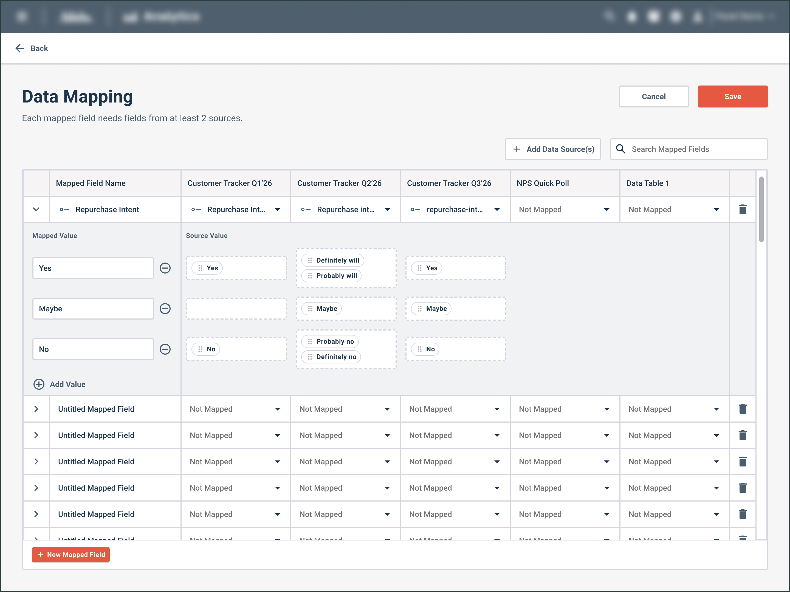
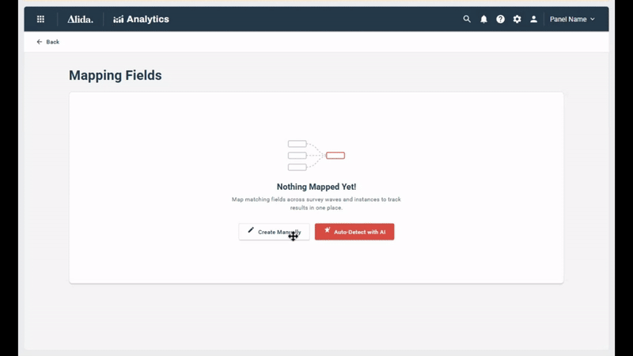
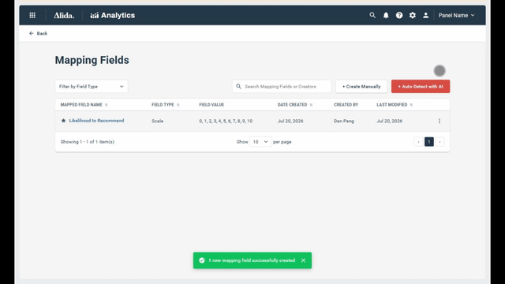
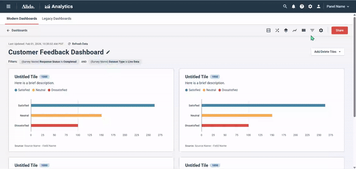
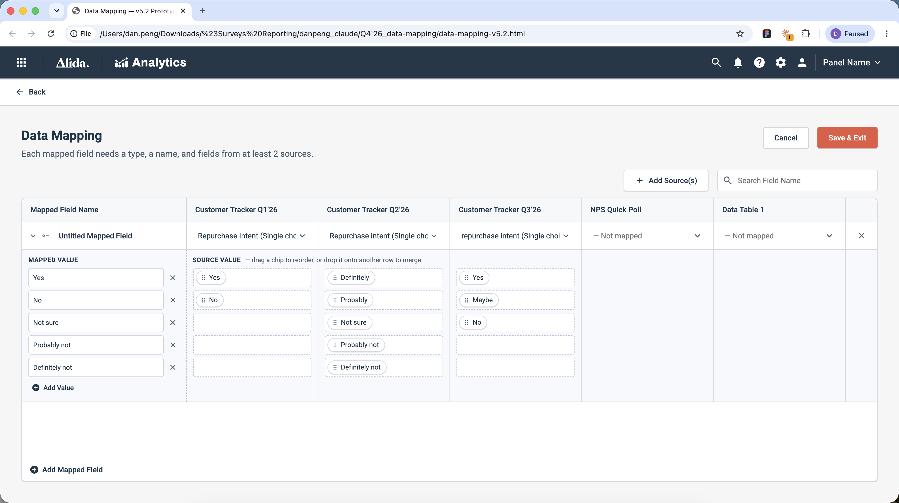
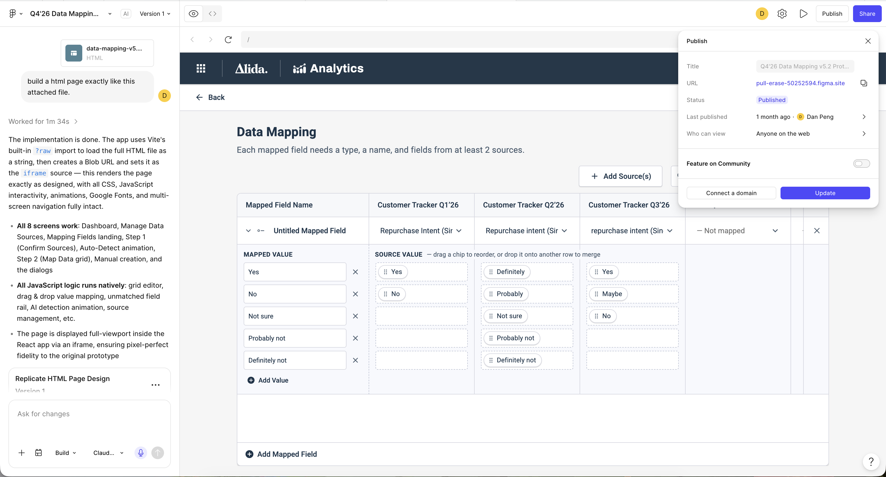
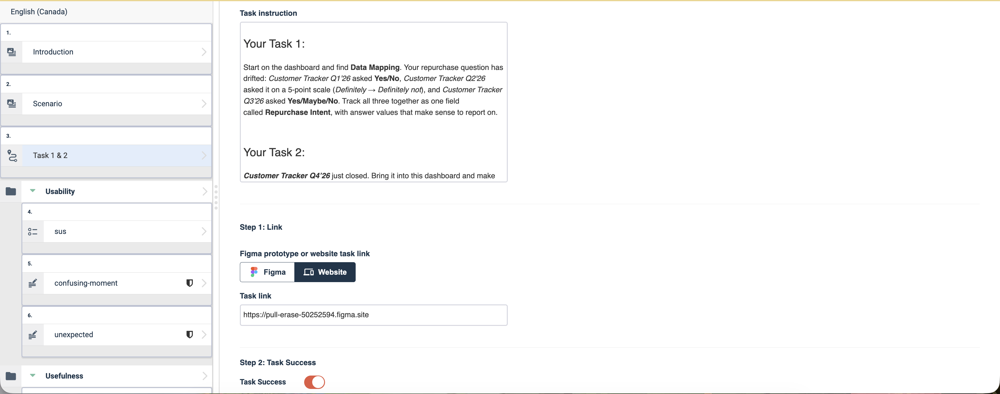
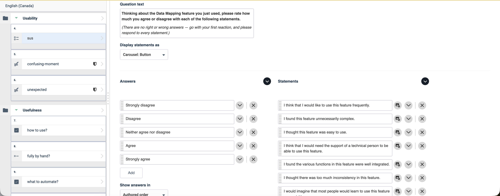
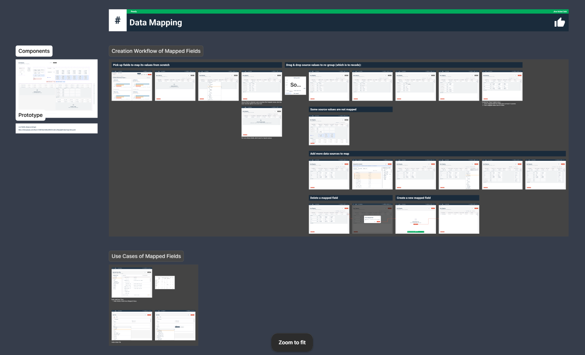

Research SaaS · Dashboard
Data Mapping
Stop rebuilding the trend in Excel every quarter. Map the drift once and keep watching it live.

The mapping grid: each row is a mapped field, each column a data source.
When answer options shift slightly between recurring survey rounds, results no longer align — dashboards can't show one continuous trend line, so users fall back on manual spreadsheet workarounds.
The early bird catches the worm, but the second mouse gets the cheese.
Customers confirmed in live demos that the design addressed their needs, reinforced by a usability score of 84/100 (vs. a 68 benchmark) with all participants completing tasks successfully — giving us confidence to move forward with launch.
Why It Matters
User pain point
The same recurring survey question sometimes comes back changed — wording, scale, or answer options can shift from one round to the next (see examples), breaking the trend line. Users then export the data and edit it by hand in Excel to rebuild the trend, every quarter the survey runs.
Business objective
Monitoring the trend in real time is the core job customers buy the add-on dashboard to do. When that job runs in Excel instead, the platform is just a data source, not where the work happens — and the upsell opportunity that comes with owning that job goes unclaimed.
The First Direction
Reusing the existing screen, adding AI enhancements
Mapped fields already existed in the product as a one-at-a-time setup: pick a source, pick a field, repeat. My first iteration kept that screen and added AI to reduce the manual effort — the AI added capability, it didn't add anything new to learn.

One field at a time — pick a source, pick a field, save, repeat.
Auto-Detect drafts the pairings for you
Auto-Detect scans every field across the dashboard's sources and drafts the pairings. The user confirms which sources are in scope, watches the scan, then reviews the drafted fields before anything is created.
Fields pair only when mapping rules all pass, a pair qualifies or it's listed as unmatched. I extended the existing configuration UI rather than inventing a new one.

Confirm the sources, watch the scan, review the draft. Pairs follow the product's existing mapping rules, and nothing is created until you confirm.
The design review that changed the brief
At the first design review, the PM and engineering leads reset the scope. Three calls came out of that room:
- No AI in the first pass. Prove the manual model works before automating it.
- Mapping has to reach the answer options, not stop at the field.
- Options mapping has to support re-grouping — several source options feeding one output value.
They were right, and the two examples below — both raised in customer calls running around the same time — show why.
Common write-ins promoted to fixed options. Q1 and Q2 no longer count the same thing.
Same question, a different scale every quarter. The waves won't share an axis.
Pair two fields whose options no longer line up and the trend line comes out technically valid and factually wrong. The first version solved the half of the problem you could see; the review found the other half — and at roughly a day per coded prototype, resetting was cheap.
The Second Direction
The second version replaces the one-at-a-time setup with a single grid: rows are mapped fields, columns are data sources. It grows from its own edges — add a field along the bottom, add a source down the right — so the whole mapping stays visible instead of hiding inside a wizard.
Expand a row and a value-alignment matrix opens underneath. Source answer options are chips: drag to reorder, drop one onto an occupied row to merge — "Very satisfied" and "Satisfied" collapse into a single reportable value by hand, no form. Each mapping saves as a rule with its result, so the next wave extends the field instead of rebuilding it.

Select fields from each source to map; expand a row to align values, dragging options together to merge them.
Validating on Our Own Platform
Usability testing with the interactive HTML prototype
To put the grid in front of recruited researchers, the prototype had to reach them first. A vibe-coded local HTML build can't, and a public link puts an unreleased concept on the open web. Figma Make published it to a URL I could embed as a task inside an Alida survey — delivered to participants, not the open web, and retired when the study closed.
Honest early feedback without leaking the concept.
From there it ran as an unmoderated usability test, dogfooding Alida end to end.

The second version, running locally as an HTML file.

A link that reaches participants without going on the open web.

The prototype sits inside the study as a task.

The 10-item SUS, then open questions to dive deeper.
Live prototype demos on customer calls
On several customer calls with the PM, customers watched the real interaction instead of reading annotations on a static mockup. They saw fields mapped across sources as it happened, not as a diagram.
The response was positive overall. Customers confirmed the core bet that mapping had to reach the answer options, and described use cases of their own that need source options re-grouped.
Testing Results
n = 5, recruited in a single one-week testing window inside the six-week project. That is short of the 12–20 the study was designed for: too small to be conclusive, but it still surfaced clear, consistent feedback. Task completion is self-reported (no session recordings).
The interaction model works — and people want it
5/5 completed both tasks in ~4 minutes with zero unexpected-behaviour complaints, and all five would use it frequently. The uses they named line up with what mapped fields feed.
Manual-first doesn't scale — users want AI drafts they can review
4/5 said setting up mapped fields by hand won't scale past a handful of key questions. That was enough to lock in AI-assist as the next layer. They want it drafting the mechanical steps (finding matches, aligning values) for review; only 1/5 wanted full manual control.
The gap to close is confidence, not ease
The qualitative feedback converges on one question: "did I do it right?"
- No way to verify the result: P5 wants response counts per mapped value; P4 finished but couldn't tell if it worked.
- Recode judgement needs guidance: P2 wants best practices ("does Probably not = No?") and a warning when a question has drifted too far to map.
- Entry point under-labelled: P1 found the initial banner meaningless until mid-task; wants labels and tooltips.
Handoff
Two artifacts, each doing one job.Hi-fi mocks pin down the visual detail; the vibe-coded prototype is the interaction guide.
- Interaction guide: the vibe-coded prototype, clicked through instead of annotated, with empty, error and edge-case states shown.
- Logged for the next iteration (surfaced in testing, not built into this pass): onboarding tooltips, per-field response counts, and a drift warning when a question can no longer map validly.
- Next: an AI-powered automatic detection, with AI-drafted matches, a manual fallback, and every draft reviewable.

Figma mocks specify the visual detail; the vibe-coded prototype carries the behavior.